00:04让我们再看一些关于 w 和 b 的可视化例子。
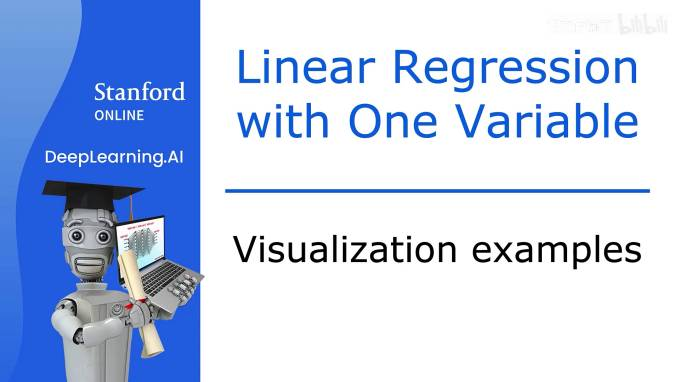
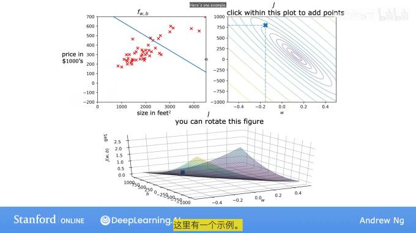
00:10在这边，你在 J 的图上有一个特定的点。
00:16对于这个点，w 约等于负零点一五，b 约等于八百。
00:24所以这个点对应了一对 w 和 b 的值，这对值会产生一个特定的代价 J。
00:32事实上，这一对特定的 w 和 b 值对应了这个函数 f 括号 x，也就是你在左侧看到的这条线。
00:42这条线与纵轴相交于八百，因为 b 等于八百，而这条线的斜率是负零点一五，因为 w 等于负零点一五。
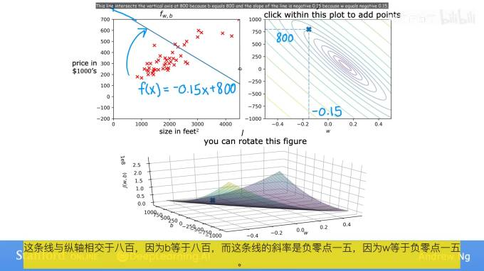
00:56现在，如果你观察训练集中的数据点，你可能会注意到这条线对数据拟合得并不好。
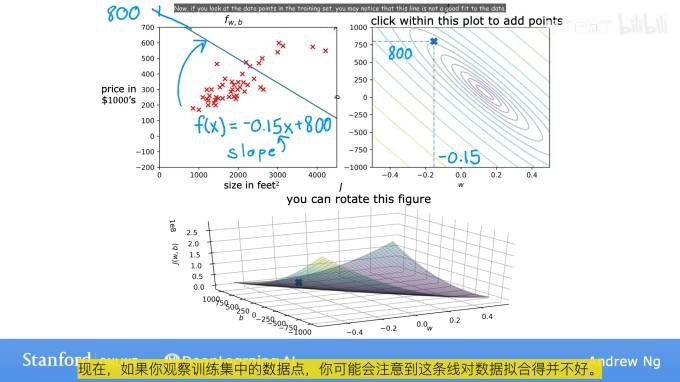
01:04对于这个函数 f 括号 x，也就是使用这些 w 和 b 的值，许多对 y 值的预测都与训练数据中 y 的实际目标值相去甚远。
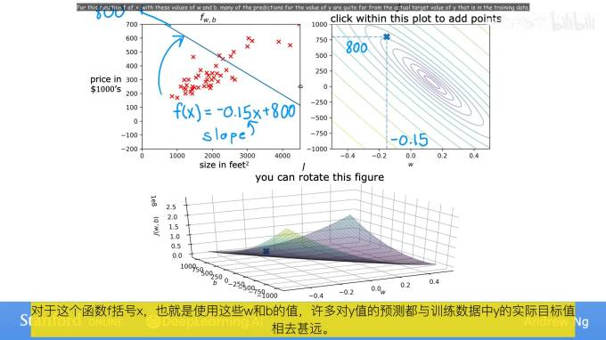
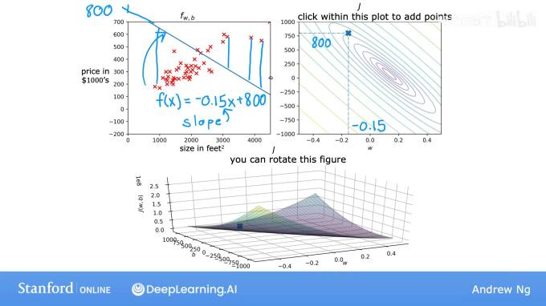
01:18因为这条线拟合得不好，如果你看 J 的图，这条线的代价在这里，离最小值相当远。
01:30这是一个相当高的代价，因为这个 w 和 b 的选择对训练集的拟合实在不佳。
01:38现在，让我们看看另一个选择了不同 w 和 b 值的例子。
01:44现在，这里是另一个函数，它依然对数据拟合得不是很好，但可能稍微没那么差。
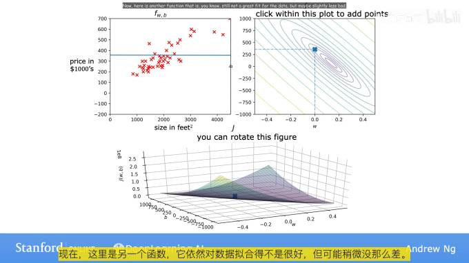
01:52所以，这里的这个点代表了产生那条线的这对特定 w 和 b 所对应的代价。
02:00w 的值等于零，b 的值大约是三百六十。
02:06这对参数对应了这个函数，这是一条水平线，因为 f 括号 x 等于零乘以 x 加三百六十。
02:22这是 w 和 b 的又一个选择，使用这些值，你最终得到了这条线 f 括号 x。
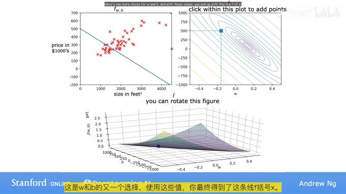
02:31同样，对数据拟合得不是很好。
02:34实际上，和前一个例子相比，它离最小值更远了。
02:40记住，最小值在那个最小椭圆的中心。
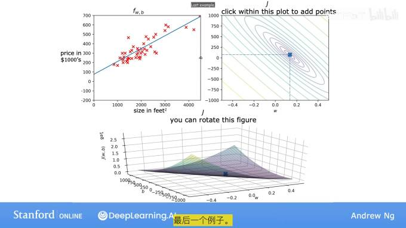
02:46如果你看左侧的 f 括号 x，这条线看起来对训练集拟合得相当好。
02:54在右侧你可以看到，代表代价的这个点非常接近这个小椭圆的中心。
03:03它不完全是精确的最小值，但已经非常接近了。
03:08对于这个 w 和 b 的值，你得到这条线 f 括号 x。
03:15你可以看到，如果你测量数据点与直线上预测值之间的垂直距离，你就得到了每个数据点的误差。
03:26所有这些数据点的平方误差之和，已经非常接近所有可能的直线拟合中，所可能达到的最小平方误差。
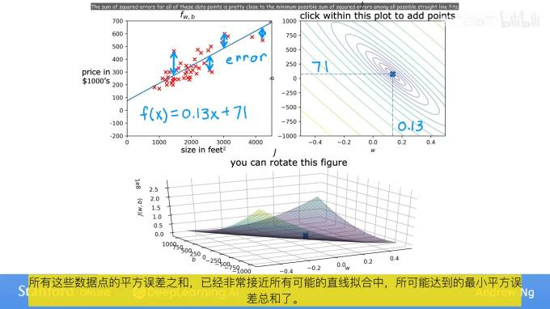
03:38我希望通过观察这些图，你能更好地理解参数的不同选择如何影响直线 f 括号 x，以及这又如何对应于不同的代价值 J。Andrew。
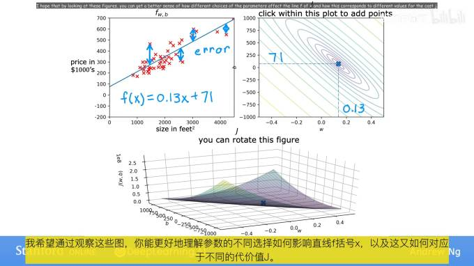
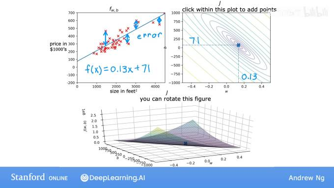
03:53并且希望你能看到，拟合得更好的线是如何对应于 J 的图上那些更接近代价函数 J 括号 w，b 可能达到的最小代价的点的。
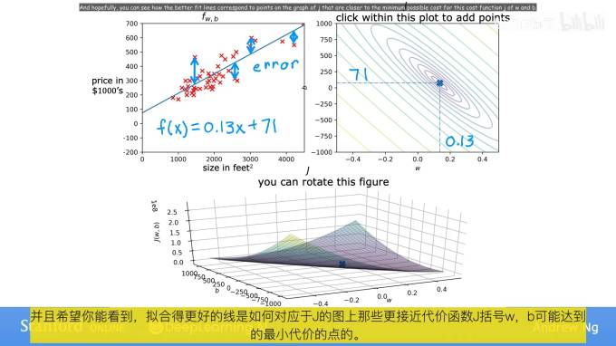
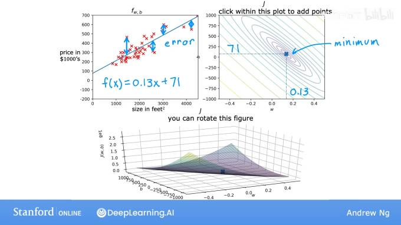
04:10在这期视频之后的可选实验中你将有机会运行一些代码。
04:15记住，所有的代码都已给出，所以你只需要按 Shift 加回车键来运行它并查看即可。
04:25这个实验会向你展示代价函数是如何用代码实现的。
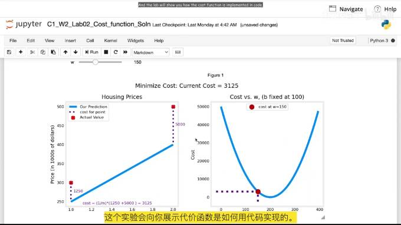
04:31并且，给定一个小训练集和不同的参数选择，你将能够看到代价是如何根据模型拟合数据的良好程度而变化的。w。
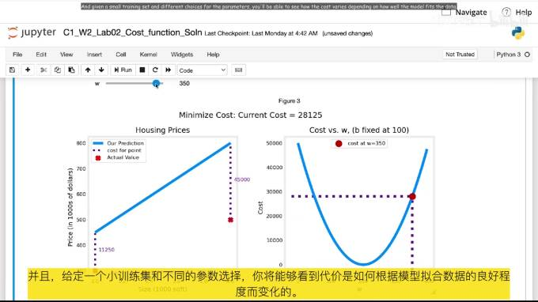
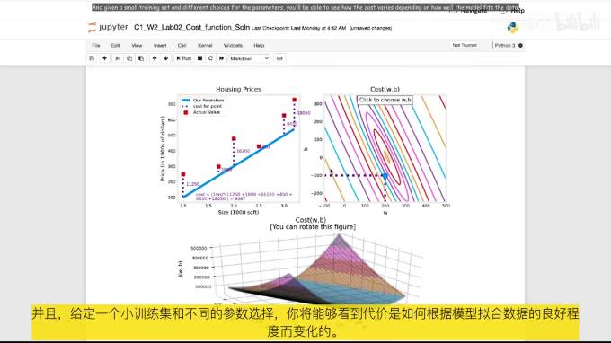
04:43在这个可选实验中，你还可以玩一个交互式的等高线图。
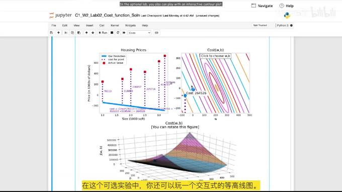
04:51你可以用鼠标光标点击等高线图上的任意位置，然后你就会看到由你为参数 W 和 B 选择的值所定义的。
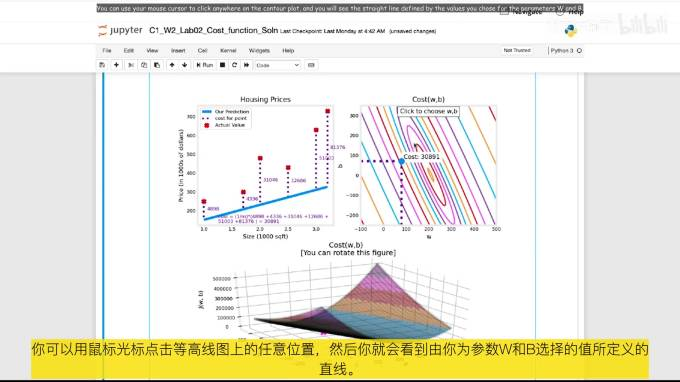
05:03你还会看到一个点出现在3D 曲面图上，显示对应的代价。
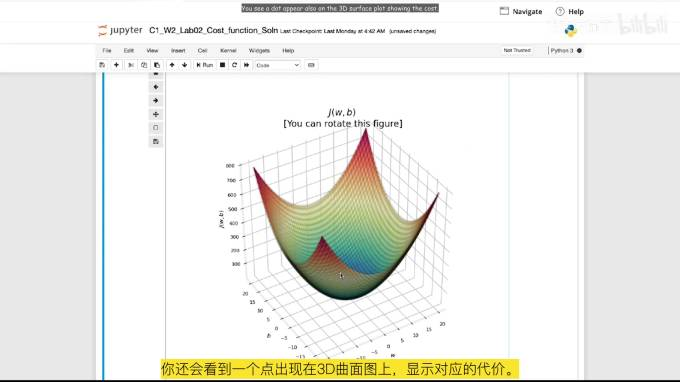
05:10最后，这个可选实验还有一个3D 曲面图，你可以用鼠标光标手动旋转和翻转它，以便更好地观察代价函数的样子。
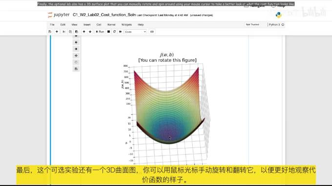
05:23我希望你喜欢玩这个可选实验。
05:28与其尝试手动从等高线图上寻找 w 和 b 的最佳值，这其实不是一个好方法，而且等我们接触到更复杂的机器学习模型时也行不通，你真正需要的是一个高效的算法，能用代码编写，来自动寻找参数 w 和 b 的值，它们能给你那条代价函数 J 最小化的最佳拟合线。
05:54有一个算法专门做这件事，叫做梯度下降。
05:59这个算法是机器学习中最重要的算法之一。
06:03梯度下降及其变体，不仅用于训练线性回归，还用于训练整个 AI 领域中一些最大、最复杂的模型。
06:14那么，让我们进入下期视频，来深入探究这个极为重要的算法一梯度下降。